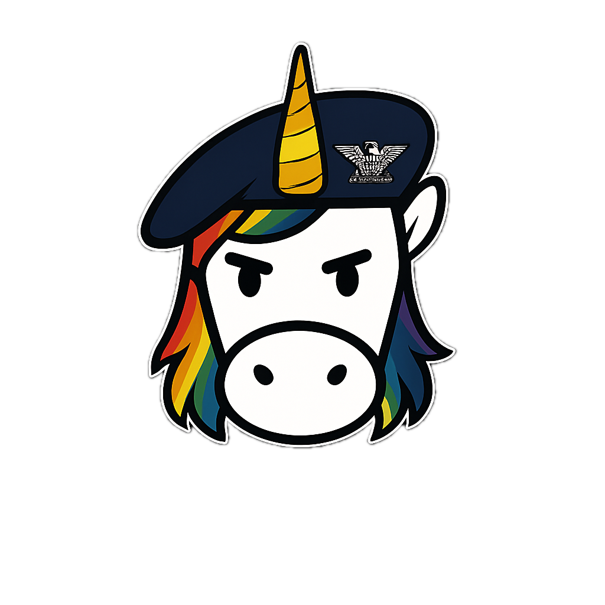
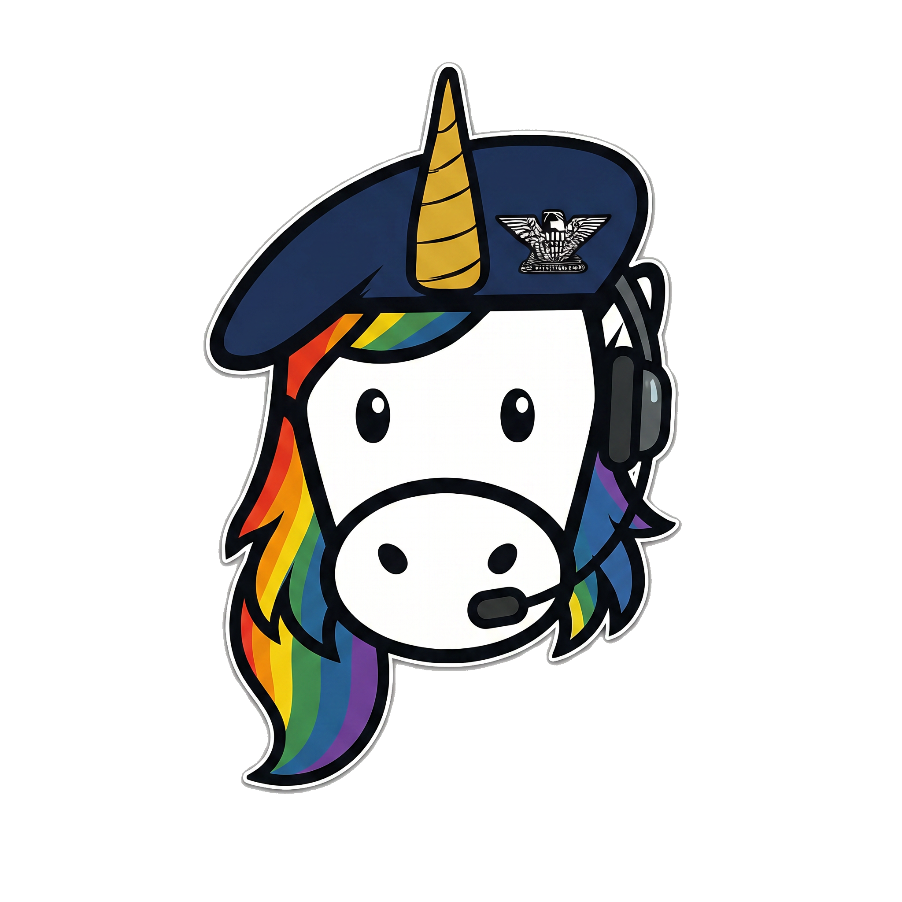
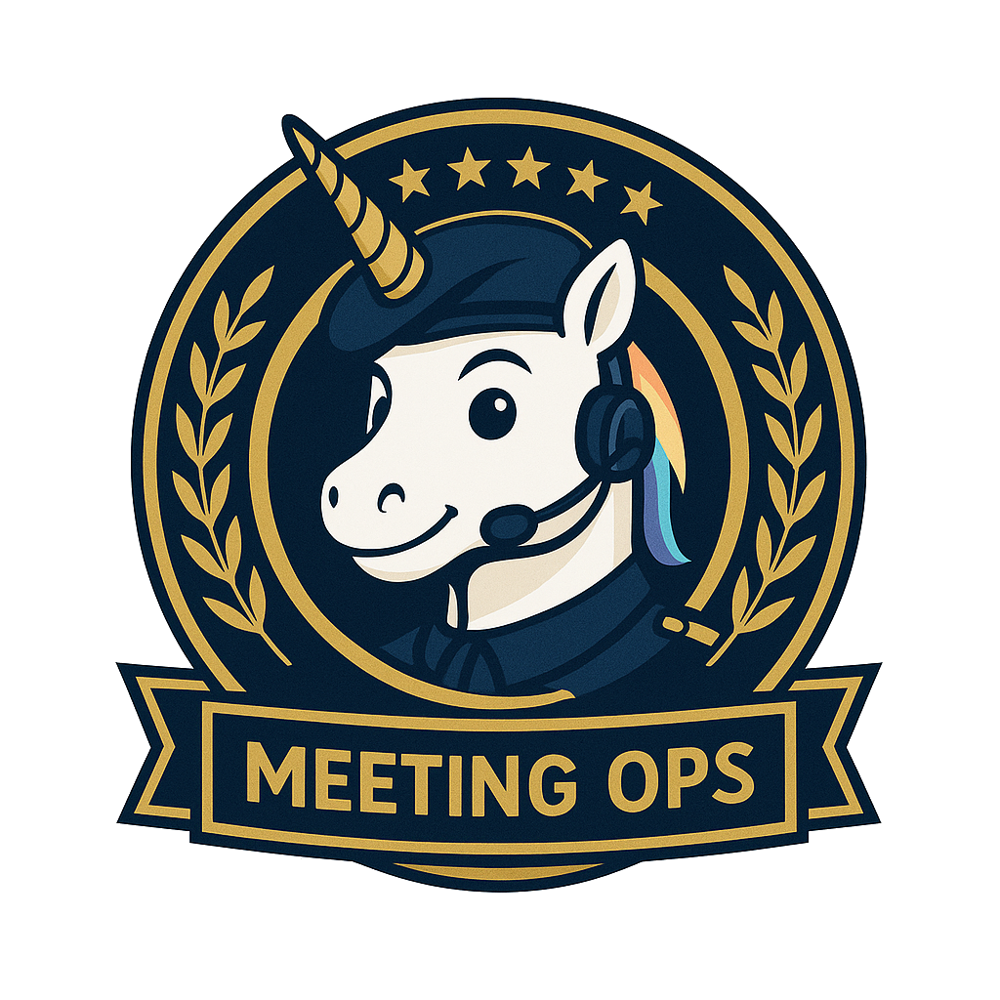

The mark · production since Jun 10
Lt Col “Minutes”
The comms officer of the *-Ops command — every aspect of her is a decision.
Navy beret
The house uniform. Shared by every *-Ops commander.
Silver oak leaf
Lt Col insignia — rank doctrine: each app's commander.
Bold sticker outline
House illustration style, inherited from the Colonel.
Gold spiral horn
House signature. Never recolored, never cropped.
Headset + boom mic
The role prop: this commander runs meeting comms.
Full rainbow mane
Persona spec — the rainbow IS the house, even in B2B navy.
Clear space
1×
1×
1×
1×
≥ 1× mark height on all sides. The compliance gate measures this at publish.
Minimum size
96px ✓
48px ✓
24px ✓ floor
14px ✗
Below 24px the insignia dies — use the headset glyph instead.
Lineage — drawn from the house

style reference

concept
Lt Col ratified
production
production
Reference-conditioned generation: the steward feeds house art so every commander is a sibling.
Primary · on navydefault
On lightprint, docs
Monochromeengraving, 1-color

✓ Flat navy or gold-lit fields
✗ Never stretch or skew
✗ Never recolor the uniform
✗ No busy fields — she needs air